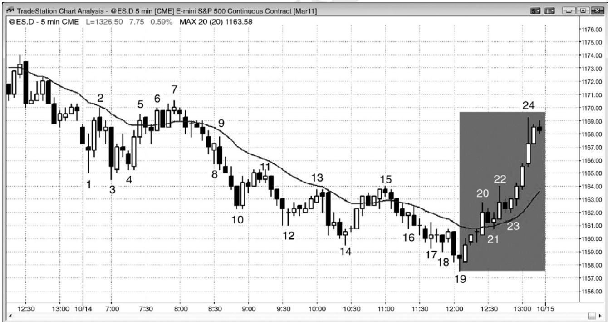
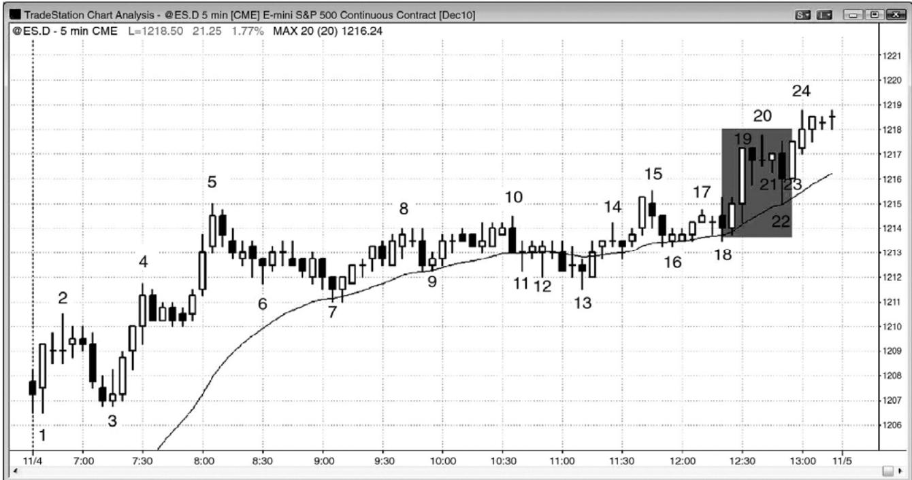
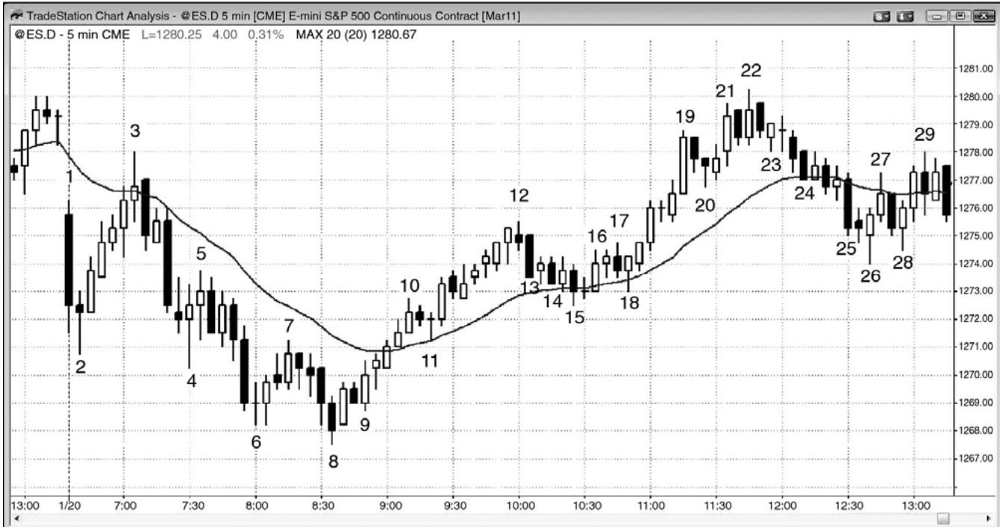

第11章 一天中的关键时刻¶
第 11 章 一天中的关键时刻
一个交易日可以分为三个阶段，虽然相同的价格行为原理在一天当中都是适用的，但是对于每一周期都有一些特定的规则，对于交易者非常有用。在一天中的任意时刻，可能发生任意类型的价格行为，但是，头一两小时很可能是一天中让你赚到的利润为风险两三倍的时间。这是一天中最重要的时间，对于大部分交易者来说，它是最容易赚钱的时间（如果交易者不够谨慎的话，也是最容易赔钱的时间）。总之，大部分交易者应该非常努力地在头一两个小时内交易，因为那些交易拥有回报、风险和胜率最好的交易者方程组合。由于它的重要性，所以第三部分的各章将详细讨论头一两小时内的交易。在太平洋标准时间上午 7:00，常常会有报告发布，它们常常引出当天的趋势。在分析速度和下单方面，计算机拥有明显的优势，而且它们是你的竞争对手。当你的对手拥有巨大的优势时，不要参与竞争。等待他们的优势消失，当速度不再重要时交易。一旦总在场内方向已经确立，就可准备顺势交易。尽管你可能错过开始的一两棒，但是，如果趋势强劲，那么交易中将会留下足够的点数。
日线图上，强多头趋势棒下方和强空头趋势棒上方常常带有短小的尾线。这些常常是由开盘反转引起的。举例说明，如果多头认为那一天很可能成为一个强多头趋势日，而且当天的头几棒下跌，那么其中大部分人将认为这很可能是当日低点，是一个稍纵即逝的绝好买进机会。如果他们判断正确，那么市场将会反弹，他们将在当日低点附近买进。在日线图上，开盘三棒下跌将在多头趋势棒的底部形成一条短小的尾线。由于他们已经为那种可能性做好准备，所以这些多头在一笔胜率可能只有 50%的交易上赚得巨大的回报，而且只承担了较低的风险。
中午时段，开始于太平洋标准时间上午 8:30 到 9:30，结束于上午 11:00 到 11:30，有时会持续到 12:30，更倾向于双向交易，比如交易区间或通道。这是一天中最常出现紧凑交易区间的时段。对于止损入场来说，这是一个可怕的环境。在双向性非常强的市场中，当价格小幅下跌时，买家介入并控制市场，因此，当市场下跌时使用止损单入场，恰好与机构在这些紧凑交易区间内的做法相反。买家是退出刮头皮交易的空头和入场刮头皮交易的多头。在顶部，发生的情况正反，卖出操作占优势。多头抛出自己获利的多头刮头皮头寸，空头卖空，建立新的空头头寸。也有波段交易者，但是一般而言，当市场处于交易区间内时，无论区间紧凑与否，大部分成交量都是刮头皮交易，机构正在低买高卖。作为一名交易者，最好的赚钱方式是做机构在做的事情，因此，如果你打算在交易区间内交易，那么就准备刮头皮，低买，高卖。在区间顶部，老手们会在疲弱的高点 1 和高点 2 买进信号棒上方使用限价单卖空；
在区间底部，老手们会在疲弱的低点 1 和低点 2 信号棒下方使用限价单买进。因为限价单交易更难以准确评估，所以初学者们应该避免使用。对于止损入场要非常谨慎，在区间顶部，仅当市场正向下反转时使用止损单卖空，在底部附近，仅当市场正向上反转时使用止损单买进。市场总是快速向顶部和底部运动，吸引充满希望的初学者们使用止损单在顶部买进，在底部卖空。他们只看到了上涨尖峰和下跌尖峰的力量，却忽视了过去 20 棒形成的交易区间，结果与机构的做法刚好相反。由于如此多的交易架构是为刮头皮准备的，而大部分交易者不能以刮头皮为生，所以在这一时段，他们应该对交易架构精挑细选。大约 90%的交易日中，当日高点和低点都是在一天的第一个三分之一时段形成的，因此，一天的第二个三分之一时段是交易者们决定初始趋势是应该恢复还是反转的时间。多头和空头都很活跃，都在争夺控制权，都试图制造一轮趋势进入收盘。在太平洋标准时间上午 8:30，市场常常反转，然后在一天中第二个三分之一时段做趋势运动。交易者们需要注意，开盘起开始的趋势可能不会持
初学者们倾向于在一天的中间三分之一时段赔钱。亏损数额常常会超过在第一个三分之一时段所赚数额，如果那样的话，他们应该考虑不在中间三分之一时段交易，除非信号特别强。很多交易者在一天的头一两个小时所赚的钱占总利润的大部分，在一天的中间三分之一时段，交易得很少，或者根本不交易。如果一个人有两家店面，一家赚很多钱，而另一家无论店主怎么努力都持续亏损，而且亏损常常超过好店所带来的收益，那么他还应该继续经营两家店面吗？答案显而易见。你可以把一天的第一个三分之一时段和中间三分之一时段看作两家店面。关掉亏损店面一点错也没有。你的目的是赚钱，不是整天交易。如果价格在一天当中都不错，而且你并不觉得劳累，那么全天交易还是明智的。但是，事情通常不是那样。中间三分之一时段倾向于出现多得多的双向交易、通道、紧凑交易区间、很多反转、没有坚持到底的趋势棒、以及大量十字星。除非交易者们对他们的止损入场精挑细选，或者有能力通过使用限价单做反向交易，否则他们应该等待价格行为变得更具预测性。在你的亏损大于赢利的时段，不做交易总比交易要好一些。初学者们如此频繁赢利，那么会继续做他们正在做的事情，希望他们所需的只是经验。然而，无论他们积累多少经验，紧凑交易区间总是很难交易的。最好等到总在场内方向变得明确，以便使形成坚持到底的几率高到足以做一笔可获利的交易。
P151
一天中的三个时段常常形成趋势恢复形态。举例说明，如果出现一波持续一两个小时的抛盘，然后反弹，到了太平洋标准时间上午 11:30 左右，市场可能再度下跌，恢复第一个三分之一时段内形成的空头趋势。有时，形态是明显的上涨－下跌－上涨或下跌－上涨－下跌，但常常不是那么明显，尽管倾向仍然存在。因此，很多交易者将把一天中间三分之一时段内反转了第一个三分之一时段内的运动的运动，看作初始趋势的一波回撤。于是，他们预期原来的趋势将在上午 11:30 左右恢复，如果出现正在发生这种情况的征兆，那么他们会选择交易。甚至在那种形态不清晰的交易，交易者们知道市场常常在上午 11:30 左右做出某些运动，当时机构开始他们一天中的最后交易，一直会持续到当天收盘。那种运动可能是反转，但也可能是突破。举例说明，如果头两个小时形成很强的抛盘，然后是一波疲弱的反弹，持续到上午 11:30，看起来正在形成顶部并反转，那么市场有可能会向上突破，引出一个趋势反转日和进入收盘的反弹。在上午 11:30 之前，交易者们不能过度执著于任一特定方向，但是，当市场进入最后一个三分之一时段，机构开始最后的交易时，他们总是应该为某个方向的运动做好准备。
当天最后时段一直到收盘结束；它常常恢复当天早些时候开始的趋势，比如在趋势恢复日，但是，它有时会反转趋势，形成一个反转日。如果日线图上出现一轮强多头趋势，那么大部分交易日的收盘都会高于开盘，市场通常会在最后的 30 到 60 分钟尝试反弹。空头趋势中，有更多交易日的收盘低于开盘，收盘前常常下跌。
在最后的 30 到 60 分钟内，交易者们应该寻找两种非常不同的价格行为，因为如果交易者们做好准备的话，每种价格行为都会提供机会，如果没有做好准备的话，那么每种价格行为都会带来问题。第一种价格行为，当风险经理告诉他们的交易员必须在收盘前将亏损头寸平仓时，市场有时会在最后的半小时内形成一轮持续的趋势。动能程序侦测到那一轮强趋势，只要动能继续，它们也会积极地做顺势交易。在某些交易日，很多共同基金将有类似订单在收盘前执行。希望在回撤入场的交易者们被套出场外，因为回撤一直没有到来。如果你看到这种价格行为，那么就在当前棒线的收盘顺势入场，将保护性止损设在超出那一棒另一端的位置。如果收盘前趋势继续，那么你很快便能够赚到大把的利润。值得注意的是交易者常常会变得非常劳累，由于他们的优势非常小，所以如果不能保证以最佳状态交易，他们应该限制交易。在一天中的任意时刻，交易者们都可能变得劳累、烦躁或分心，所以在恢复正常前不应交易。计算机不会变得劳累，收盘前的交易与一天中其他时间的交易一样。这是它们超越个人交易者的另一优势。
当日线图上出现一轮多头趋势时，多头趋势棒的数量几乎总是多于空头趋势棒。当形成一轮空头趋势时，情况刚好相反。举例说明，如果市场处于一轮强空头趋势中，在进入最后一小时时，出现一波中等幅度的反弹，那么很多交易者会预期当天在它的低点附近收盘，日线图上的那一棒将是一条强空头趋势棒，收盘靠近低点。因此，在交易日结束前，老手们会在开始向下反转的任意反弹快速做空，预期收盘靠近当日低点。有些交易者会等到抛盘变得清晰然后做空。当日线图上是一轮空头趋势时，结果常常形成一轮强空头趋势进入空头趋势日的收盘。反过来对日线图上的多头趋势也是正确的，棒线通常在靠近高点处收盘，在最后一个小时之前的下跌之后，市场常常会反弹进入收盘。
对于交易者来说，另一种类型的收盘更难，因为它不是把交易者们套出盈利的交易之外，而且常常迫使他们认赔离场。市场将会以趋势运动进入收盘，但是形成大型棒线、很长的尾线、以及两三次猎杀止损但是没有触及超出信号棒的最初止损的反转。如果你对市场以趋势进入收盘的前提是正确的，而且市场正形成一两条尾线很长的棒线，那么如果你将交易波段化，坚持使用最初的止损，直到回撤之后，然后调紧止损至略超出回撤，那么你就可以赚钱。
每当一份报告发布时，无论它是太平洋标准时间上午 7:00 的房地产报告，还是上午 11:15美国联邦公开市场委员会（FOMC）的声明，当你进入或退出交易时，滑移价差是很常见的，所以风险常常较大，回报常常较小。另外，胜率可能只有 50%。结果是一个糟糕的交易者方程，大部分交易者应该等待数秒到数分，直到市场变得有序，然后下单。

P152
如图 11.1 所示，收盘前形成反弹的部分原因是风险经理的“拍肩膀”（译注：即提醒交易员平仓）。当市场开始向上反转，到达棒 22 时，在棒 10 之后卖空的交易员们都有在收盘时拥有亏损头寸的风险，而在棒 16 之后卖空的交易者们都已持有亏损头寸。交易公司的风险经理监视着交易员们在收盘前持有什么样的头寸。如果大量交易员持有突然变为亏损的空头头寸，那么他们可能会在情绪上依附于自己的交易，希望随后出现抛盘。他们的奖金取决于他们的业绩，他们可能极不愿意承认自己对于当天空头趋势的判断突然变得错误。风险经理的工作是冷静客观，他会告诉交易员们买回他们的空头头寸。如果足够多的公司发生这样的事情，那么可能在收盘前引发一轮持续的上涨趋势。在家工作的交易者们希望出现回撤，但是一直没有出现。一旦他们意识到正在发生什么，他们就会在棒 21 和棒 23 处的短暂回撤上方买进，或者在任意一棒的收盘买进，然后将保护性止损设在入场棒的低点下方。动能程序侦测到持续买进，也开始买进，而且只要上行动能足够强，将会继续买进。共同基金和对冲基金在收盘前的买进也对反弹有所帮助。当市场在收盘前下跌时，所有这些交易员们的做法刚好相反。
在日线图上，市场处于一条紧凑的多头通道内（未给出）。在过去的 32 天里，只有两天收盘靠近当日低点，21 天的收盘价都高于开盘价。在日线图上的多头波段内，大部分交易者都是多头实体，交易者们急于在收盘前的反弹买进。
市场在头一两个小时里处于交易区间内；区间高度约为平均日区间的一半，提醒交易者们可能突破进入一个趋势型交易区间日。当市场从棒 7 与棒 2 形成的双重顶向下运动时，交易者们更加确信突破会是向下的，卖压正在增长。然后市场形成一个较低的交易区间，但是又从棒15均线缺口棒下跌，向下突破，但是又向上反转，超过了开盘价。记住，大多数反转日都是从趋势型交易区间日开始的。
像通常一样，市场在一天的中间三分之一时段横向运动，然后，在一天的最后三分之一时段，从棒 7 到棒 10 的空头趋势尝试恢复。然而，向下突破失败，棒 10 到棒 16 的交易区间成为空头趋势中的最终旗形。
图11.2 收盘前的趋势可能非常吓人

P153
当市场在收盘前形成一两个十字星时，你可能在对收盘前的趋势判断正确的情况下仍然赔钱。如图 11.2 所示，两条强多头趋势棒形成一个上涨尖峰，到棒 19 结束，很可能出现坚持到底，但是任意多头交易的保护性止损都需要低于那个尖峰，或者至少低于第二条大型多头趋势棒的低点。一旦市场开始在棒20前后形成十字星，就有快速回撤的风险。如果你在棒16 上方买进，那么你会使用低于棒 20 的紧凑止损或盈亏平衡止损。然而，如果你在棒 19 尖峰的收盘买进，或者在棒 21 十字星的上方买进，那么你需要承担的风险要低于尖峰两棒的低点，或者至少低于棒 19。尾线表明市场是双向的。如果你在这种类型的市场中交易，而且只有非常熟练的交易者才应考虑在一天收盘前的紧凑交易区间内入场，那么你就必须为了波段而交易，允许双向运动，并且使用宽松的止损。
这是一个趋势恢复日，差不多在当天的第一个三分之一时段是一波反弹，结束于棒 5，然后是日中的交易区间，当日收盘前多头趋势恢复。最后的反弹开始于太平洋标准时间上午11:15，不过向上突破直到上午12:30才形成。
图 11.3 中午的反转

当天趋势在第一个小时左右确定之后，市场常常会在一天的中间三分之一时段开始时反转，时间大约在太平洋标准时间上午 8:00 和 9:30 之间（通常在 8:30 左右）。有时，市场会进入交易区间，并持续几个小时，然后在最后的一两个小时内向某个方向突破。突破要么引出趋势恢复日，要么引出反转日。如图 11.3 所示，从棒 8 到棒 12 的反弹非常强劲，以至于早期的空头趋势未能在当天最后一个三分之一时段尝试恢复。相反地，在棒 17 处令市场向下反转的疲弱尝试之后，从棒 8 到棒 12 的反弹恢复上升势头。棒 18 从棒 12 到棒 15 的楔形多头旗形向均线回撤，多头恢复开始。然而，多头未能继续令市场反弹，市场跌回开盘价位，在日线图上形成一个十字星。
P154
棒 3 是对均线的一次测试，与棒 1 形成一个双重顶，所以可能是当日一个高点。交易者们正预期市场向下突破开盘区间的底部，然后形成一波向下的测量运动。相反地，市场形成一个空头尖峰，跌至棒 4，然后又两次下推，形成一轮空头尖峰和通道趋势，其中的通道是一个楔形。交易者们认为它可能是一天中第二个三分之一时段开始时的向上反转，可能是当日一个低点。买进信号在开始于棒 8 的双棒反转上方。在棒 9 外包上涨棒，很多交易者认为市场已经翻转为总在场内多头状态，截止棒 10 多头尖峰结束，大部分交易者认为它已经是多头市场。